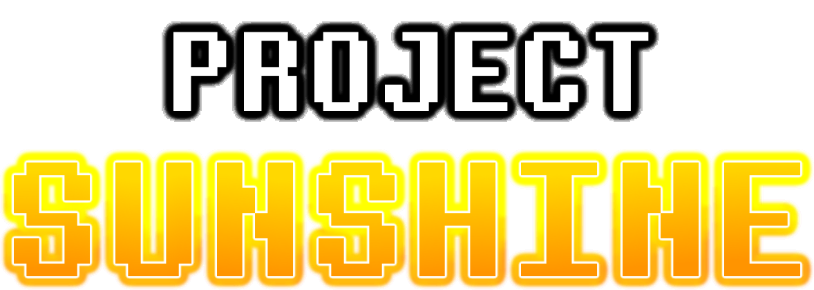
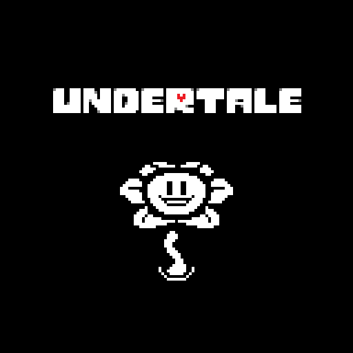
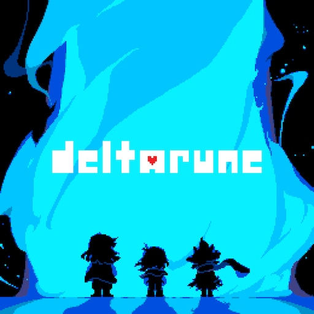
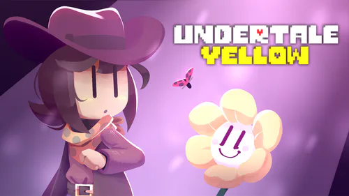
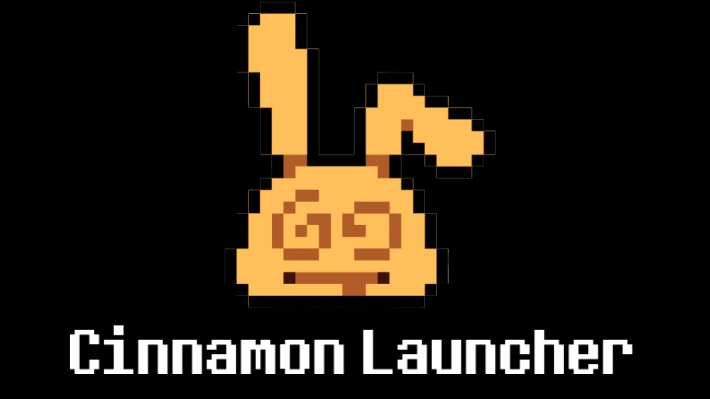
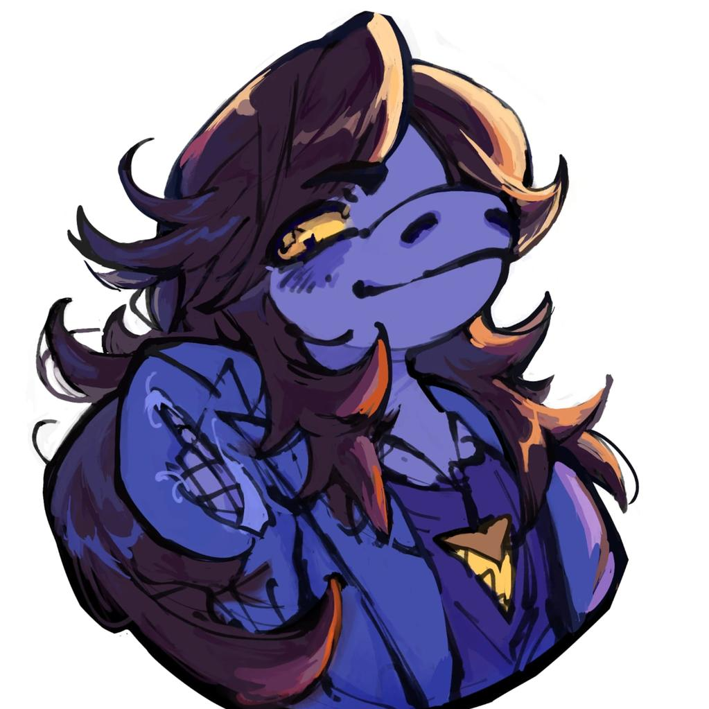
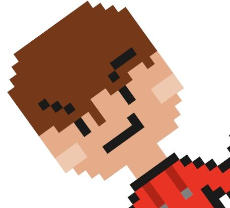
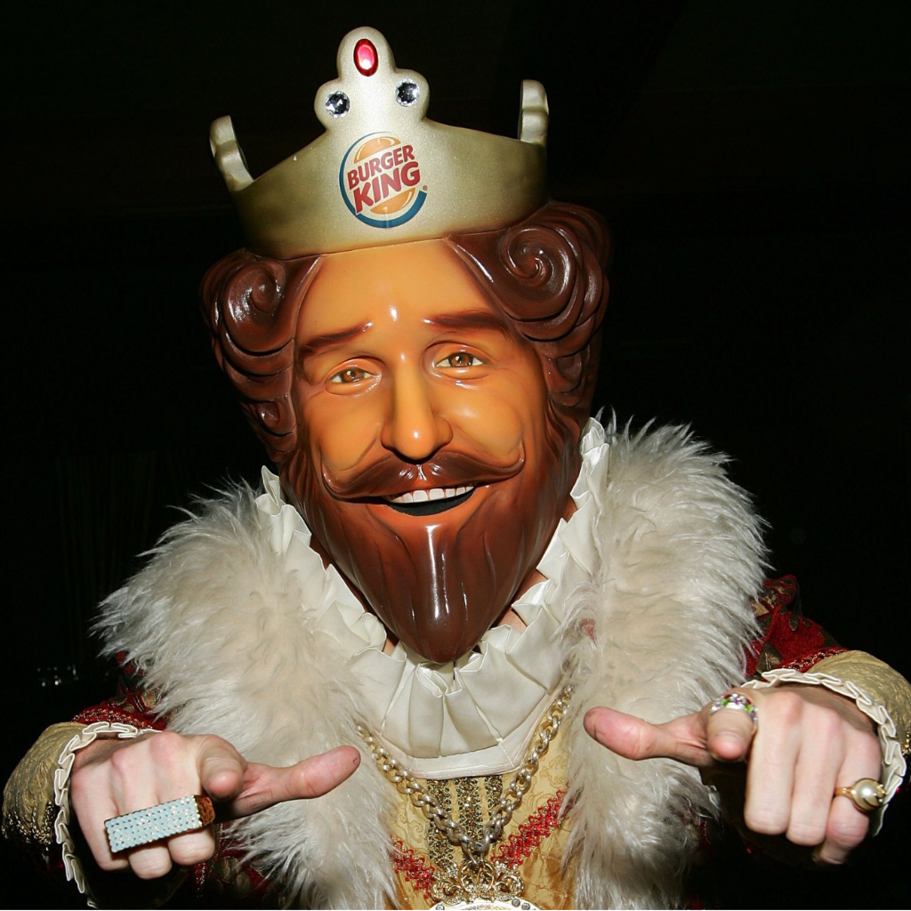
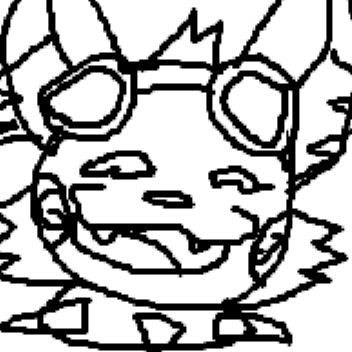

Project Sunshine is a collection of fanmade ports of Undertale, Deltarune, and Undertale Yellow to the Wii U and 3DS!








The patcher for UNDERTALE 3DS and Wii U and DELTARUNE 3DS and Wii U.
When you create a game in GameMaker: Studio and export it, GameMaker: Studio exports the game code as bytecode instead of native compiled code. This bytecode is compatible with any other GameMaker: Studio runner (also known as YoYo runner), as long as they have matching GameMaker: Studio versions. This is very similar to how Java applications work.
This is how projects such as Droidtale can exist. We exploit the fact that GameMaker: Studio games compile to bytecode, which means they can be run on any platform that has an official runner for it!
If GameMaker games use bytecode, what prevents us from creating our own runner? And if we can write our own runner, what prevents us from porting GameMaker: Studio games to other platforms?
That's where projects like Butterscotch come in! Butterscotch is an open-source reimplementation of GameMaker: Studio's runner.
If this already exists, then what's stopping people from porting Butterscotch to MORE consoles? What's stopping us from porting a variety of GameMaker: Studio games to the 3DS and Wii U?
This is where Cinnamon, a fork of Butterscotch, comes in!
Cinnamon aims to be an open-source re-implementation of GameMaker Studio's runner for the 3DS and Wii U. This opens up lots of opportunities for games like Pizza Tower, Undertale Yellow, Undertale, and Deltarune to run on the 3DS and Wii U.
Have questions about Project Sunshine, want to report a bug, or interested in contributing to the cinnamon runner? Here is how you can reach us:
As of now, only UNDERTALE: Wii U Edition is out. However, UNDERTALE 3DS comes out very soon!
The runner can run mods, though don't expect full support for now. Some mods may not run at all.
Cinnamon is an open source project! Anyone can contribute towards expanding the project. You can view the repo here!
For now, no. This does not mean you still cant play OTHER GameMaker games via Cinnamon Launcher, however.
Yes! UNDERTALE and DELTARUNE Chapters 1-5 will be fully playable on Old 3DS/2DS models.
Unlike other remakes, this is a port of the ACTUAL full game!